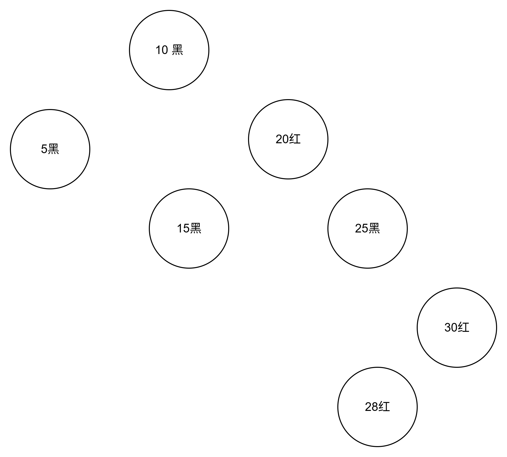

不再畏惧红黑树：从原理到代码实现
引入
在学习树的时候,我们学过BST(二叉搜索树),其的优点是O(h)的查找、插入、删除，但是如果在极端情况下的情况下,h会达到O(n),那么BST就无法使用了。于是我们引入了AVL(平衡二叉搜索树)。也就是约束树的高度来确保树的查找、插入、删除的复杂度都是O(logn)。但是在删除时插入和删除时，旋转操作较多，调整代价高。尤其是在频繁修改的场景下，AVL树的维护成本较大。
以下是一个对比的表格
| 特性 | 普通二叉搜索树（BST） | AVL树 | 红黑树（RBT） |
|---|---|---|---|
| 树的平衡性 | 无保证，可能退化成链表 | 严格平衡（任意节点子树高度差 ≤ 1） | 弱平衡（约为黑色节点平衡，允许较大高度差） |
| 查找性能 | 平均O(log n)，最坏O(n) | 最优O(log n) | O(log n)，略逊于AVL |
| 插入/删除性能 | 平均和最坏O(n)，无自平衡 | 需要频繁旋转，调整开销较大 | 旋转次数较少，调整开销较低 |
| 旋转次数 | 无旋转 | 插入/删除可能多次旋转 | 插入/删除旋转次数较少 |
| 实现复杂度 | 简单 | 复杂 | 中等，较AVL简单 |
| 典型应用 | 简单场景，少量数据 | 读操作多，写操作少的系统 | 操作系统内核、STL map/set、Java TreeMap |
| 高度上界 | 最坏可达n（链表） | 大约1.44 * log n | 最大约为2 * log n |
因此，在频繁插入删除的情况下就需要一个适合的树结构————红黑树。
红黑树
性质
红黑树有以下五个性质：
-
每个节点是 红色 或 黑色。
-
根节点是黑色。
-
每个叶子节点（NIL）是黑色。
-
每个红色节点的子节点都是黑色。
-
任意路径上，黑色的节点个数相同。
解释： -
NIL叶子： 强调性质3和5中的“叶子节点”指的是虚拟的、不存储数据的黑色NIL节点，它们代表空指针。这简化了边界情况的处理。
-
黑高(bh)： 定义黑高(black-height) - 从某个节点x出发（不包含x本身）到达其任意一个NIL叶子节点的路径上的黑色节点数量。性质5保证了从x出发的所有路径黑高都相等，记为bh(x)。特别强调根节点的黑高就是整棵树的黑高(bh(root))。
-
平衡性保证： 结合性质4（限制红色节点连续）和性质5（保证黑高相等），可以推导出：红黑树的最长路径（红黑交替）不会超过最短路径（全黑）的两倍。从而保证了树高h <= 2 * log₂(n+1)，即O(log n)。可以简单图示说明最长和最短路径。
操作
在AVL树中，旋转操作是调整树结构，使其满足平衡性要求。但是，在红黑树中，旋转操作只是调整树结构，但不满足平衡性要求。因此，在红黑树中，需要引入一种新的操作——染色（也就是红染黑、黑染红）。
1. 旋转
目的：
在插入或删除节点后，树的结构可能违反红黑树性质。旋转是局部调整子树结构的基本操作，不破坏BST性质，用于降低树高或为后续修复创造条件。
两种基本旋转：
-
左旋 (Left Rotation)：
- 场景： 围绕节点x进行左旋。x是其父节点，y是其右子节点。
- 操作： 让y成为子树的新根。x成为y的左子节点。y原来的左子节点β成为x的右子节点。
- 示例：
- 效果： 降低以x为根的右子树的高度。
-
右旋 (Right Rotation)：
- 场景： 围绕节点x进行右旋。x是其父节点，y是其左子节点。
- 操作： 让y成为子树的新根。x成为y的右子节点。y原来的右子节点β成为x的左子节点。
- 示例：
- 效果： 降低以x为根的左子树的高度。
2. 插入
-
基础： 首先像普通的
BST一样插入新节点z（找到位置，作为叶子节点的替代插入）。 -
初始颜色： 将新插入的节点
z染成红色。 为什么？因为插入红色节点只可能违反性质2（根节点黑）或性质4（无连续红）。插入黑色节点必然违反性质5（所有路径黑高变化），修复代价更大。 -
修复： 调用
InsertFixup(z)来修复可能违反的性质（主要是性质4，如果z是根则修复性质2）。 -
InsertFixup的核心： 循环处理，目标是将违反性质4（连续红）的情况向上“推”或“消除”。关注点集中在z、z.parent和z.uncle（叔叔节点）的颜色上。关键在于区分三种情况（或六种对称情况）：-
情况1：叔叔是红色 (
Uncle is RED)- 操作： 将父节点和叔叔节点染黑，祖父节点染红。然后将
z指向祖父节点（问题向上移动）。 - 图解：
如图所示，在这个图中15和20都是红色 此时我们可以将其的父节点和叔叔节点都染黑，将祖父节点染红。然后z指向祖父节点。变为下图所示
此时由于性质2：根节点是黑色，因此可以放心地将父节点和叔叔节点都染黑，将祖父节点染红。
最后变为
- 思考：为什么这能解决局部问题但可能把问题上移？实际上插入时问题是红色与红色冲突，如果按照这样做，虽然只能解决局部问题，但是把问题上移，一直到根节点，那么问题就解决。
- 目标： 通过变色将冲突上移到祖父节点。
- 操作： 将父节点和叔叔节点染黑，祖父节点染红。然后将
-
情况2：叔叔是黑色 (
Uncle is BLACK)，且z是父节点的右/左孩子（形成“折线”）- 操作： 通过一次旋转（
z是右孩子则父节点左旋，z是左孩子则父节点右旋）转换为情况3。旋转后z和父节点角色互换（原来的父节点变为z的子节点）。 - 图解：

如图，当出现如下所示的“折线”结构，可以通过一次旋转将其转换为“直线”结构。
此时我们可以来看情况3，一起解决。 - 目标： 将“折线”冲突转换为“直线”冲突（情况3）。
- 操作： 通过一次旋转（
-
情况3：叔叔是黑色 (
Uncle is BLACK)，且z是父节点的左/右孩子（形成“直线”）- 操作： 将父节点染黑，祖父节点染红。然后围绕祖父节点进行一次旋转（父节点是左孩子则祖父右旋，父节点是右孩子则祖父左旋）。
- 图解：
如图，我们在上述的情况下得到了一个直线，我们来看一下如何解决这个问题。
第一步先染色，染成如图所示
第二步，旋转，旋转为下图所示
- 目标： 这是修复的终点。 旋转后，子树根变为黑色（新染黑的父节点），且不再有连续红节点，局部修复完成。
- 总结： 如下列表格所示插入时如何调整
叔叔颜色 插入节点位置 调整 红色 不重要 将父节点和叔叔节点染黑，祖父节点染红。然后将z指向祖父节点（问题向上移动）。 黑色 形成折线 将“折线”冲突转换为“直线”冲突（情况3）。 黑色 形成直线 将父节点染黑，祖父节点染红。然后围绕祖父节点进行一次旋转（父节点是左孩子则祖父右旋，父节点是右孩子则祖父左旋）。
-
-
循环结束： 当
z成为根节点（染黑即可，修复性质2）或z的父节点是黑色（不再违反性质4）时，循环结束。最后确保根节点是黑色的。 -
复杂度： 插入本身
O(log n)，修复过程最多需要O(log n)次（从叶子到根），且最多进行2次旋转（从情况2转到情况3需要1次旋转，情况3需要1次旋转，总共最多2次）。修复的旋转次数是常数级（最多2次）。
3. 删除
删除操作比插入更复杂，因为删除一个节点（尤其是黑色节点）可能同时违反性质4和性质5。
- 基础： 像普通
BST一样删除节点y（实际被删除的节点）。找到要删除的节点z：- 如果
z最多只有一个子节点：则直接删除z，用其子节点（或NIL）替代。 - 如果
z有两个子节点：找到z的后继(successor)y（右子树中的最小节点）。将y的值复制到z。问题转化为删除后继节点y（此时y最多只有一个右子节点，因为它是最小节点）。 - 最终实际被物理删除的节点记为
y（它最多只有一个非NIL子节点），其非NIL子节点（或NIL）记为x（x替代了y的位置）。
- 如果
- 修复触发： 如果被删除的节点
y是黑色的，删除操作可能导致性质4（无连续红）或性质5（黑高一致）被破坏（因为路径上少了一个黑色节点）。需要调用DeleteFixup(x)来修复。如果y是红色，删除通常不会破坏主要性质（性质5可能局部满足，性质4也不影响）。
我们可以列下标更为清晰：
| 被删除节点颜色 | 替代节点颜色 | 删除操作 |
|---|---|---|
| 红 | 不重要 | 删除 |
| 黑 | 红 | 替代节点变黑，保持黑高 |
| 黑 | 黑 | 需要修复 |
-
DeleteFixup(x)的核心：x（现在占据了y原来的位置）被看作具有一个**“额外黑色”（extra black）。这个“额外黑色”不是真实的颜色，而是一个概念标记**，表示经过x的路径上多算了一个黑色（用来补偿y被删除造成的黑高损失）。修复的目标是通过变色和旋转，将这个“额外黑色”向上传递或“吸收”掉，直到：x指向一个红黑节点：将x染黑（“吸收”额外黑色）。x指向根节点：直接移除“额外黑色”（根节点变黑）。- 在向上传递过程中通过旋转重新平衡。
-
四种情况（及对称情况）： 修复过程关注
x、x.parent、x.sibling（兄弟节点w）以及w的子节点的颜色。- 情况1：兄弟
w是红色 (Sibling is RED)- 操作： 将
w染黑，父节点染红。然后围绕父节点对w进行一次旋转（x是左子则父节点左旋，x是右子则父节点右旋）。旋转后，x有了一个新的黑色兄弟（原w的一个子节点）。 - 图解： 必须配图！ 展示如何将红兄弟情况转换为黑兄弟情况（情况2、3、4）。
- 目标： 转换为兄弟节点
w是黑色的情况。
- 操作： 将
- 情况2：兄弟
w是黑色，且w的两个子节点都是黑色 (Both Children of Sibling are BLACK)- 操作： 将
w染红。将“额外黑色”从x身上移除并转移到父节点x.parent上（现在x.parent成为新的x，可能需要继续修复）。 - 图解： 展示变色，说明为什么这能移除
x的额外黑色但可能把问题上移到父节点。 - 目标： 将额外黑色向上传递。
- 操作： 将
- 情况3：兄弟
w是黑色，w的左子红右子黑（若x是左子） /w的右子红左子黑（若x是右子） (Sibling's Near Child is RED, Far Child is BLACK)- 操作： 将
w染红，w的那个红色子节点染黑。然后围绕w进行一次旋转（x是左子则w右旋，x是右子则w左旋）。旋转后，x有了一个新的兄弟w（原w的那个红色子节点），并且新w的远端子节点是红色的。 - 图解： 必须配图！ 展示如何将此情况转换为情况4。
- 目标： 转换为情况4。
- 操作： 将
- 情况4：兄弟
w是黑色，w的远端子节点是红色 (Sibling's Far Child is RED)- 操作： 将
w的颜色设为父节点x.parent的颜色。将父节点x.parent染黑。将w的那个远端子节点染黑。然后围绕父节点x.parent进行一次旋转（x是左子则父节点左旋，x是右子则父节点右旋）。最后将x设置为根节点（或退出循环）。 - 图解： 必须配图！ 展示关键的变色和旋转操作。说明这次旋转如何重新平衡了子树，移除了
x的额外黑色，并保持了所有性质。 - 目标： 这是修复的终点。 通过这次操作，成功移除了
x的额外黑色，修复了黑高，并保持了红黑性质。局部修复完成。
- 操作： 将
- 情况1：兄弟
-
循环结束： 当
x指向根节点或x指向一个红节点时（将x染黑即可）。最后确保根节点是黑色的。 -
复杂度： 删除本身
O(log n)，修复过程最多需要O(log n)次（从原位置到根），且最多进行3次旋转（情况1可能转1次，情况3转1次，情况4转1次，总共最多3次）。修复的旋转次数也是常数级（最多3次）。
C语言实现源代码
结构体定义
红黑树的结构体定义如下所示
1 | typedef enum { |
其中RBColor枚举表示红黑树节点的颜色，RBNode结构体表示红黑树节点，RBTree结构体表示红黑树。RBNode是红黑树某一个节点的数据结构，RBTree是红黑树的数据结构,包括的根节点、哨兵节点、比较函数、键值释放函数和数据释放函数。那三个为函数指针,为实现类似多态的行为做一些封装。
## API介绍
使用的API如下
1 | /** |
每一个函数实现
每一个具体实现如下：
CreateNilNode()
创建全局唯一的 nil 哨兵节点（代替NULL）。
1 | static RBNode* CreateNilNode(){ |
RBTreeInit()
初始化红黑树结构。
1 | int RBTreeInit( |
CreateRBNode()
创建一个新红节点。
1 | static RBNode* CreateRBNode(void *key, void *data){ |
RBTreeLeftRotate() & RBTreeRightRotate()
左旋和右旋。
左旋
1 | static void RBTreeLeftRotate(RBTree *tree, RBNode *x) { |
右旋
1 | static void RBTreeRightRotate(RBTree *tree, RBNode *x) { |
RBTreeInsertFixup()
插入后修复红黑性质。
1 | static void RBTreeInsertFixup(RBTree *tree, RBNode *z) { |
RBTreeInsert()
插入新键值对。
1 | int RBTreeInsert(RBTree *tree, void *key, void *value) { |
RBTreeSearch()
查找节点。
1 | RBNode* RBTreeSearch(RBTree *tree, RBNode *x, void *key) { |
RBTreeMinimum()
查找子树最小节点。
1 | RBNode* RBTreeMinimum(RBTree *tree, RBNode *x) { |
RBTreeTransplant()
替换子树。
1 | static void RBTreeTransplant(RBTree *tree, RBNode *u, RBNode *v) { |
RBTreeDeleteFixup()
删除后修复红黑性质。
1 | static void RBTreeDeleteFixup(RBTree *tree, RBNode *x) { |
RBTreeDelete()
删除节点。
1 | int RBTreeDelete(RBTree *tree, void *key) { |
RBTreeFreeNodeRecursive() & RBTreeFree()
递归释放所有节点。
1 | static void RBTreeFreeNodeRecursive(RBTree *tree, RBNode *node) { |
RBTreeSuccessor()
查找中序后继节点。
1 | RBNode* RBTreeSuccessor(RBTree *tree, RBNode *x) { |